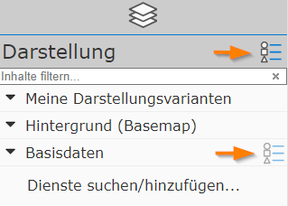
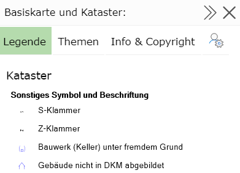
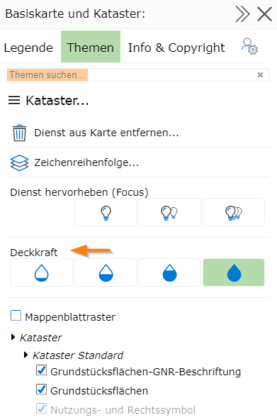

4 Legend and Topics
Due to complex cartography, the content of a map is not always self-explanatory. To be able to match the symbology on the map to the corresponding object, a legend is often helpful.
The legend shows all cartographic symbols with an explanatory label.
The legend can be opened via the presentation-variant tree:

Every container, as well as the entire Presentation block, offers a menu icon. Clicking it opens a corresponding window with further functions.
Note
Clicking on the menu icon in the Presentation block opens the properties window for all topics. If you are only interested, for example, in the legend for Base Data, it is enough to click the menu icon for that container. The content is then restricted to only what is contained in that container, which is clearer for most applications.
Clicking on the menu icon opens the following dialog:

Note
Tip: the window can be widened or narrowed again via the arrow icon in the title bar. Clicking on the title bar has the same effect. Maximizing/minimizing by clicking on the title bar also works for all other dialogs shown in the map viewer.
The X icon can be used to close a dialog again.
The dialog is additionally divided into different tabs (Legend/Topics/Description and Copyright/Map Info).
4.1 Legend
The cartographic symbols are shown here. These are grouped by map service.
Note
Background: the thematic data shown in the map viewer generally comes from at least one map service. These services perform the cartographic processing of the data according to the individual settings made by the user.
The legend view is dynamic. What is shown depends on the current visibility of the topic layers. Changing the scale or the map extent can also change the content of the legend.
4.2 Topics
The already mentioned map services (which are responsible for the cartography) consist of (often very many) individual topic layers. Meaningful groupings of these topic layers can be shown or hidden via presentation variants (see the section Presentation and Map Content). Generally, these predefined toggles should be sufficient. For special requirements, however, it can happen that the predefined settings are not sufficient and a different combination of topic layers is desired. For this, all possible individual topic layers of the map services are listed in this dialog and made toggleable here.
Note
The topic tree can become very extensive and confusing. Several hundred layers are often the norm. To make it easier to navigate the tree, topics are sometimes grouped together. In addition, as with the presentation variants, there is the option to restrict the tree to a search term via a Search topics… search field.
The dialog also offers the option to make individual map services transparent via the xx% buttons:

As with the presentation variants, topic layers that are not visible at the current map scale are shown in gray.
4.3 Description and Copyright
This area shows a description and a copyright text for the individual map services (if available).
4.4 Map Info
Further information for the current map is shown here:
Name of the map and name of the map group/category
(User name) of the map author/administrator
Your own user name with which you are logged in to use the map (if anonymous access is not allowed)
Credits/acknowledgments for the map viewer application
Administrators can access the admin tools for the map from here (MapBuilder…)